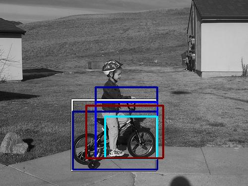

0.310041

0.338658

0.396705

0.404299

0.412147

0.501915

0.503779

0.561515

0.566084

0.566256
| Target image | 0.310041 | 0.338658 | 0.396705 | 0.404299 | 0.412147 | 0.501915 | 0.503779 | 0.561515 | 0.566084 | 0.566256 |
| Target image  |  5571.223633 |  5478.035156 |  5231.127930 |  4462.416992 |  4370.940918 |  3891.875977 |  3771.354736 |  3656.382568 |  3418.950928 |  3390.161621 |
Target image |  6115.160156 |  5811.670898 |  4285.920410 |  4252.542480 |  3994.803467 |  3987.643555 |  3859.161133 |  3644.645996 |  3565.437500 |  3551.099609 |
Target image |  13243.919922 |  9938.726562 |  8907.526367 |  7744.960449 |  7162.893555 |  7125.359863 |  7047.500977 |  6752.159668 |  6381.040039 |  6249.501953 |
Target image |  24632.685547 |  15958.873047 |  13788.092773 |  11626.926758 |  9599.636719 |  9030.832031 |  8929.604492 |  8592.583984 |  8579.076172 |  8537.308594 |